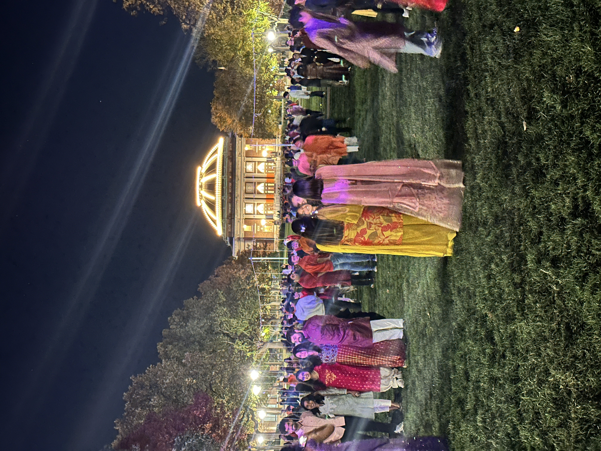
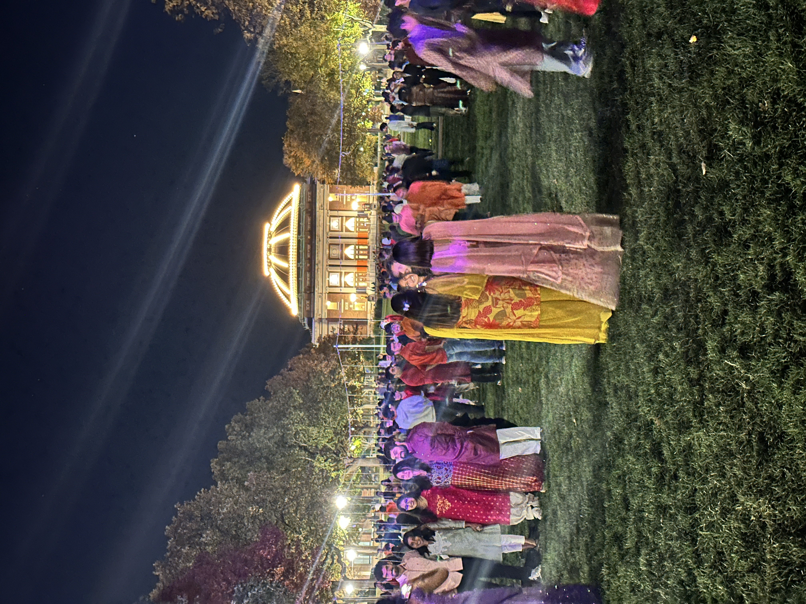

Origins
The Quad grew with the university, framed by academic buildings, planted with intentional sightlines, and designed for “accidental” run-ins that became clubs, projects, and lifelong group chats.
Brick paths, open sky, and a daily parade of Illini energy.
 

The Quad grew with the university, framed by academic buildings, planted with intentional sightlines, and designed for “accidental” run-ins that became clubs, projects, and lifelong group chats.
Illini Union to the north; Foellinger Auditorium to the south. One for coffee and meetings, one for lectures and concerts. Balanced like a perfectly curved brick path.
Quad Day, sunrise photos, impromptu a cappella sets, and the annual “first warm day” where everyone suddenly remembers sunlight is free.
Fall crunch, winter hush, spring blossoms, summer stillness. Same bricks, different stories.
Gowns, families, and photos that somehow all happen in the same five square feet, right where the light hits just right.
Benches with memories, plaques you’ll notice in week 12, and paths that mysteriously match how people actually walk.
Yes—unless it’s soggy, taped off, or a spontaneous nap has broken out. Use paths when it helps the lawns recover.
Golden hour. Or any hour with clouds. Bonus: early mornings feel like you have the place to yourself.
Union side steps, shaded trees, and wherever a friend texts “I’m here” (they aren’t). Bring water.
Layers, a tiny notebook, and the courage to say hi to someone new. That’s how clubs start.
After a rain, some bricks become “reflecting pools.” Plot your route like a tiny expedition.
Plan caffeine stops north (Union) and south (after class). Hydration still counts if it’s iced.
Everyone migrates to sunlight. Bring a blanket, pretend to read, accidentally join three clubs.
If your friend says “five minutes,” you have time to take a lap and discover a new favorite corner.
Pause one beat for the snapshot. They’ll do the same when you nail the cap-toss boomerang.
Forecasts here are more like suggestions. Pack optimism and a light jacket.
Favorite bench? Hidden shade spot? A meet-cute with a goose?